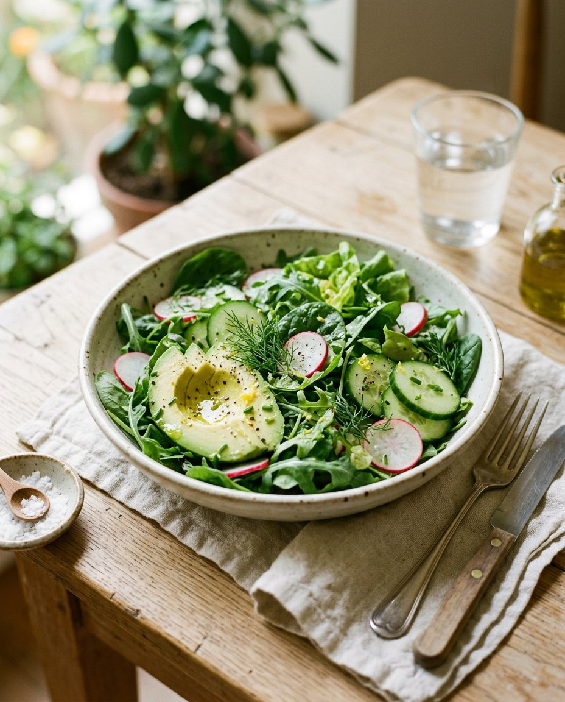

Зелёный салат с авокадо
Хрустящие овощи, нежный авокадо и лёгкая лимонная заправка за считаные минуты.

ПРИЯТНОГО АППЕТИТА ✳Приготовление
Простой салат, который можно подать самостоятельно или как дополнение к основному блюду. Заправляйте его непосредственно перед подачей, чтобы листья остались свежими.
- 01
Вымойте и обсушите листья салата, огурец, редис и укроп. Крупные листья порвите руками.
- 02
Нарежьте огурец и редис тонкими ломтиками. Авокадо разрежьте, удалите косточку и кожуру, мякоть нарежьте дольками.
- 03
Смешайте масло с лимонным соком, солью и перцем.
- 04
Соедините овощи и зелень в миске, полейте заправкой и аккуратно перемешайте. Сразу подавайте.
Авокадо темнеет после нарезки, поэтому добавляйте его в последнюю очередь и сразу сбрызгивайте лимонным соком.
Иллюстрация создана с помощью ИИ и может отличаться от результата. Рецепт подготовлен с помощью ИИ; учитывайте особенности продуктов и проверяйте готовность блюда.